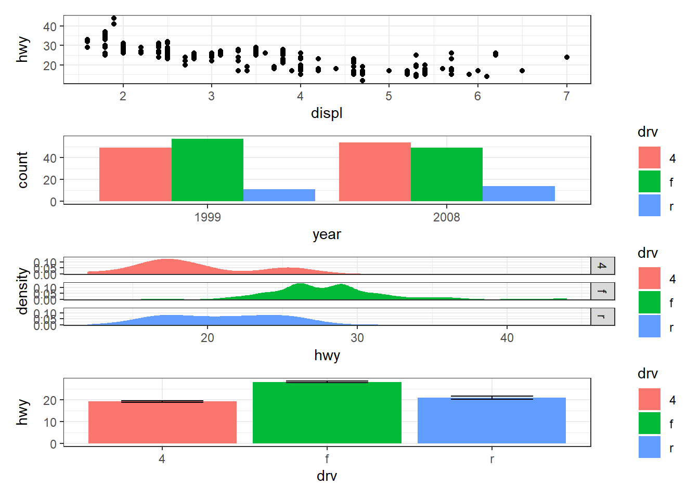
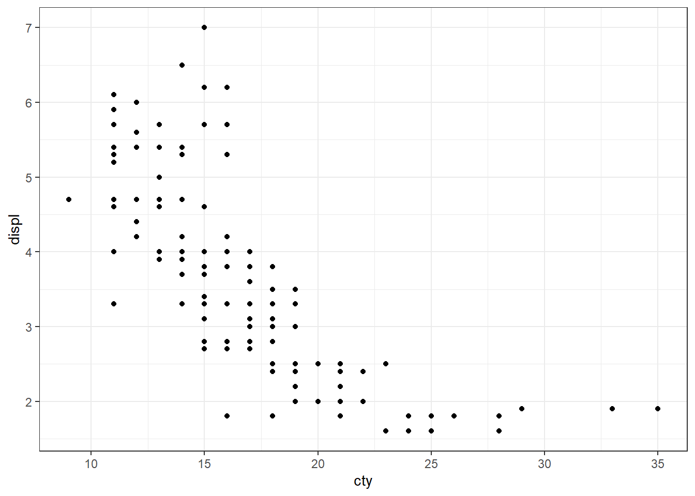

library(tidyverse)答疑汇总
1 正则表达式
1.1 零宽断言
- 提取
P前面的字符：
a <- c("H11A1PNIO", "H1A1PNIO")
str_extract(a, ".*(?=P)")[1] "H11A1" "H1A1" - 提取
Melbourne：
x <- "Stamford Plaza, 111 Little Conllins St, Melbourne Vic 3000"
x %>%
str_extract("(?<=,)[^,]*$") %>%
str_extract("(?<= )\\w+")[1] "Melbourne"- 零宽断言符号存在重复时提取：
str_extract("sdfs--", ".*?(?=-)")[1] "sdfs"1.2 常用
# 提取字母与数字
tibble(test = c("MG1", "MGW1")) %>%
mutate(words = str_extract(test, "[:alpha:]+"),
digits = str_extract(test, "\\d+"))# A tibble: 2 × 3
test words digits
<chr> <chr> <chr>
1 MG1 MG 1
2 MGW1 MGW 1 2 Quarto
2.1 中文 PDF 输出
在 YAML 中加上：
include-in-header:
text:
\usepackage{ctex}3 tidyverse
3.1 dplyr + tidyr
3.1.1 separate_rows()
- 拆分行为多列
tibble(x = 1:2,
y = c("a, b, c", "a, d")) %>%
separate_rows(y, sep = ", ")# A tibble: 5 × 2
x y
<int> <chr>
1 1 a
2 1 b
3 1 c
4 2 a
5 2 d 3.1.2 separate()
- 仅拆分第一个空格
df <- tibble(x = c("a ds vc", "bs dsg sfa gs"))
df %>%
separate(x, c("first", "second"),
sep = " ", extra = "merge")# A tibble: 2 × 2
first second
<chr> <chr>
1 a ds vc
2 bs dsg sfa gs3.1.3 rowwise()
- 计算每行
,前的数的和除以,后的数的和：
data <- tribble(~A , ~B, ~C,
"12,0", "21,2", "36,4",
"4,2", "3,0", "2,0",
"0,2", "0,0", "1,0")
data %>%
mutate(across(1:3, ~ str_split(.x, ",")),
across(1:3, ~ map(.x, as.numeric))) %>%
rowwise() %>%
mutate(res = sum(A[1], B[1], C[1])/ sum(A[2], B[2], C[2]))# A tibble: 3 × 4
# Rowwise:
A B C res
<list> <list> <list> <dbl>
1 <dbl [2]> <dbl [2]> <dbl [2]> 11.5
2 <dbl [2]> <dbl [2]> <dbl [2]> 4.5
3 <dbl [2]> <dbl [2]> <dbl [2]> 0.5- 对不同列含有的数值组合后去重：
df <- tribble(
~V1, ~V2, ~V3,
58, 0, 2,
171, 1, 3,
0, 58, 2,
1, 171, 3
)
df %>%
rowwise() %>%
mutate(total = list(c(V1, V2, V3))) %>%
as_tibble() %>%
mutate(total = map(total, sort)) %>%
distinct(total, .keep_all = TRUE)# A tibble: 2 × 4
V1 V2 V3 total
<dbl> <dbl> <dbl> <list>
1 58 0 2 <dbl [3]>
2 171 1 3 <dbl [3]>df %>%
mutate(total = pmap(., ~ sort(c(...)))) %>%
distinct(total, .keep_all = TRUE)# A tibble: 4 × 4
V1 V2 V3 total
<dbl> <dbl> <dbl> <list>
1 58 0 2 <dbl [3]>
2 171 1 3 <dbl [3]>
3 0 58 2 <dbl [3]>
4 1 171 3 <dbl [3]>3.1.4 content
包含一系列如 cur_data()、cur_group_id() 等返回当前分组和变量信息的函数。
df <- tibble(
group = c("A", "A", rep("B", 4), "C", "C")
)
df %>%
group_by(group) %>%
mutate(a = cur_group_id(), # 返回分组的组号
b = row_number())# A tibble: 8 × 3
# Groups: group [3]
group a b
<chr> <int> <int>
1 A 1 1
2 A 1 2
3 B 2 1
4 B 2 2
5 B 2 3
6 B 2 4
7 C 3 1
8 C 3 23.2 ggplot2
3.2.1 主题
theme_set(theme_bw())
ggplot(mpg, aes(cty, displ)) +
geom_point()
3.2.2 组合图
利用字符串拼接成所需执行代码：
library(patchwork)
p1 <- ggplot(mpg) +
geom_point(aes(x = displ, y = hwy))
p2 <- ggplot(mpg) +
geom_bar(aes(x = as.character(year), fill = drv), position = "dodge") +
labs(x = "year")
p3 <- ggplot(mpg) +
geom_density(aes(x = hwy, fill = drv), colour = NA) +
facet_grid(rows = vars(drv))
p4 <- ggplot(mpg) +
stat_summary(aes(x = drv, y = hwy, fill = drv), geom = "col", fun.data = mean_se) +
stat_summary(aes(x = drv, y = hwy), geom = "errorbar", fun.data = mean_se, width = 0.5)
my_list <- list(p1, p2, p3, p4)
cat(paste0("my_list[[", 1:length(my_list), "]]"),
sep = " / ", file = "my_list") # 生成一个 connection
eval(parse(file = "my_list")) # 运行该 connection3.2.3 列名传递
列名太长，通过列号传递映射：
plot_xy <- function(x_i, y_i) {
names <- names(mpg)
x <- names[x_i]
y <- names[y_i]
mpg %>%
ggplot(aes(.data[[x]], .data[[y]])) +
geom_point()
}
plot_xy(7, 8)
3.3 purrr
3.3.1 对列名迭代
利用 tidyverse 与 base R 混合编程会出现奇奇怪怪的问题，主要是和 Tidy evaluation 有关系。如果需要用到 tidyverse 的函数，建议直接在 tidyverse 的框架下完成。大致流程就是：
- 写一个函数；
- 用
map()系列的函数迭代。
name <- names(mpg)[1:2]
fn <- function(cols) {
mpg %>%
group_by(.data[[cols]]) %>%
summarise(freq = n())
}
map(name, fn)[[1]]
# A tibble: 15 × 2
manufacturer freq
<chr> <int>
1 audi 18
2 chevrolet 19
3 dodge 37
4 ford 25
5 honda 9
6 hyundai 14
7 jeep 8
8 land rover 4
9 lincoln 3
10 mercury 4
11 nissan 13
12 pontiac 5
13 subaru 14
14 toyota 34
15 volkswagen 27
[[2]]
# A tibble: 38 × 2
model freq
<chr> <int>
1 4runner 4wd 6
2 a4 7
3 a4 quattro 8
4 a6 quattro 3
5 altima 6
6 c1500 suburban 2wd 5
7 camry 7
8 camry solara 7
9 caravan 2wd 11
10 civic 9
# … with 28 more rows4 杂七杂八 | 奇淫技巧
4.1 批量建模
y <- paste0(c("mpg", "disp", "hp"), c(" ~ wt"))
map(y, ~lm(.x, data = mtcars))[[1]]
Call:
lm(formula = .x, data = mtcars)
Coefficients:
(Intercept) wt
37.285 -5.344
[[2]]
Call:
lm(formula = .x, data = mtcars)
Coefficients:
(Intercept) wt
-131.1 112.5
[[3]]
Call:
lm(formula = .x, data = mtcars)
Coefficients:
(Intercept) wt
-1.821 46.160 4.2 修改源码
library(rstatix)
trace(rstatix:::as_tidy_cor, edit = T) # 修改后保存
rstatix::cor_test(iris, Sepal.Length, Petal.Length) # 可以把调整 cor 输出为 4 位4.3 执行字符串
text = "c(1:10)"
eval(parse(text = text)) [1] 1 2 3 4 5 6 7 8 9 10eval(parse(text = "1/2"))[1] 0.54.4 缺失值统计
data <- tibble(x = c(rep(letters[1:3], 2), NA, NA))
data# A tibble: 8 × 1
x
<chr>
1 a
2 b
3 c
4 a
5 b
6 c
7 <NA>
8 <NA> data[data$x == "a",] # 筛选时缺失值留在表格中# A tibble: 4 × 1
x
<chr>
1 a
2 a
3 <NA>
4 <NA> table(data$x == "a") # 缺失值没有被统计进去
FALSE TRUE
4 2 5 其他包
5.1 psych
描述性统计：
library(psych)
psych::describe(iris, quant = c(.25, .75)) # 不支持 dplyr 的 group_by() vars n mean sd median trimmed mad min max range skew
Sepal.Length 1 150 5.84 0.83 5.80 5.81 1.04 4.3 7.9 3.6 0.31
Sepal.Width 2 150 3.06 0.44 3.00 3.04 0.44 2.0 4.4 2.4 0.31
Petal.Length 3 150 3.76 1.77 4.35 3.76 1.85 1.0 6.9 5.9 -0.27
Petal.Width 4 150 1.20 0.76 1.30 1.18 1.04 0.1 2.5 2.4 -0.10
Species* 5 150 2.00 0.82 2.00 2.00 1.48 1.0 3.0 2.0 0.00
kurtosis se Q0.25 Q0.75
Sepal.Length -0.61 0.07 5.1 6.4
Sepal.Width 0.14 0.04 2.8 3.3
Petal.Length -1.42 0.14 1.6 5.1
Petal.Width -1.36 0.06 0.3 1.8
Species* -1.52 0.07 1.0 3.0# 分组统计
psych::describeBy(iris, group = iris$Species, quant = c(.25, .75))